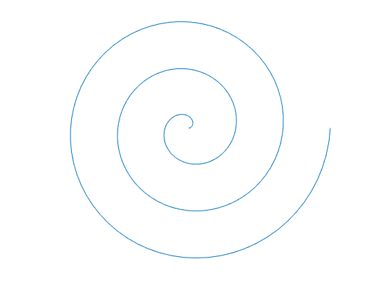

matlab工程分析第六次作业
习题6.1
% Archimedean spiral
phi = linspace(0, 6*pi, 200);
x = phi.*cos(phi);
y = phi.*sin(phi);
plot(x,y)
axis equal off
% Astroid
phi = linspace(0, 2*pi, 100);
x = 4*cos(phi).^3;
y = 4*sin(phi).^3;
plot(x,y)
axis equal off% Butterfly
ezplot('(x.^2-x.^6)-y.^6',[0,1],[-1,1])
axis equal off% Bicuspid
a = 1;
ezplot('(x.^2-1^2).*(x-1).^2+(y.^2-1^2).^2',[-1,1])
axis equal offhelp ezplotezplot - （不推荐）易用的函数绘图函数
此 MATLAB 函数 绘制表达式 fun(x) 在默认定义域 -2π < x < 2π 上的图形，其中 fun(x) 仅是 x 的显函数。
ezplot(fun)
ezplot(fun,[xmin,xmax])
ezplot(fun2)
ezplot(fun2,[xymin,xymax])
ezplot(fun2,[xmin,xmax,ymin,ymax])
ezplot(funx,funy)
ezplot(funx,funy,[tmin,tmax])
ezplot(...,fig)
ezplot(ax,...)
h = ezplot(...)
See also fcontour, fmesh, fplot, fplot3, fsurf, plot
Reference page in Doc Center
doc ezplot
Other functions named ezplot
sym/ezplot习题6.3
N = 17;
phi = pi/3;
delta = 1;
% 先画出两条成phi角度原始的直线
x1 = linspace(0,N,N+1);
y1 = zeros(1,N+1);
x2 = linspace(0,N,N+1)*delta*cos(phi);
y2 = linspace(0,N,N+1)*delta*sin(phi);
plot([x1,x2],[y1,y2],'ks-')
hold on
% 用一个for循环画出其他直线
for i = 1:N
plot([x1(i),x2(N+1-i)],[y1(i),y2(N+1-i)],'k')
end
axis off习题6.9
Rb = 90.21;
RT = 106;
phi_s = 1/9*pi;
m = 10;
ts = 14.022;
N = 24;
Rs = N*m/2;
phi_x = @(x)(acos(Rb./x)); % phi(R)
inv_x = @(x)(tan(x)-x); % inv(x)
theta_T = 0.5*ts/Rs + inv_x(phi_s) - inv_x(phi_x(RT));% plot by polar (画出轮子的所有N个部分)
R_1 = linspace(Rb,RT,100);
phi_1 = inv_x(phi_x(R_1));
R_2 = zeros(1,100)+RT;
phi_2 = linspace(inv_x(phi_x(RT)),inv_x(phi_x(RT))+2*theta_T,100);
R_3 = linspace(Rb,RT,100);
phi_3 = 2*(theta_T+inv_x(phi_x(RT)))-inv_x(phi_x(R_3));
R_4 = zeros(1,100)+Rb;
phi_4 = linspace(2*(theta_T+inv_x(phi_x(RT))),2*pi/N,100);
%polar2([phi_1,phi_2,phi_3,phi_4],[R_1,R_2,R_3,R_4],[Rb,RT,0,2*pi/N])
%polar([phi_1,phi_2,phi_3,phi_4],[R_1,R_2,R_3,R_4])
for i=linspace(0,2*pi,N)
polar(phi_1+i,R_1,'k')
hold on
polar(phi_2+i,R_2,'k')
polar(phi_3+i,R_3,'k')
polar(phi_4+i,R_4,'k')
end% plot by plot (只画出轮子的一个部分)
x_1 = R_1.*cos(phi_1);
y_1 = R_1.*sin(phi_1);
x_2 = R_2.*cos(phi_2);
y_2 = R_2.*sin(phi_2);
x_3 = R_3.*cos(phi_3);
y_3 = R_3.*sin(phi_3);
x_4 = R_4.*cos(phi_4);
y_4 = R_4.*sin(phi_4);
plot(x_1,y_1,'k',x_2,y_2,'k',x_3,y_3,'k',x_4,y_4,'k')
axis offplot(x_1,y_1,'k',x_2,y_2,'k',x_3,y_3,'k',x_4,y_4,'k')
习题6.15
lambda = linspace(1,40,100);
beta = [0.02,0.05,0.08,0.11,0.15,0.18,0.23,0.30];
% 用meshgrid方便计算
[ll,bb] = meshgrid(lambda,beta);
K_1 = bb./sind(ll) + 1./cosd(ll);
% 求出各个beta值最小的lambda
lambda_min = [];
K_min = [];
for i=beta
[l_min,kmin] = fminbnd(@func_5_44_a, 1/180*pi,40/180*pi,[],i);
K_min = [K_min kmin];
%fprintf('当beta = %.2f 时使得K取得最小值的lamda = %g\n',[i,l_min])
lambda_min = [lambda_min l_min];
end
plot(lambda_min/pi*180,K_min,'k--')
hold on
% for循环遍历所有beta画出图像
for i=1:length(beta)
plot(lambda,K_1(i,:))
end
ylim([1,2])
legend('Minimum','Location','SouthWest')
xlabel('\lambda')
ylabel('K')
text(21,1.18,'\beta = 0.02')
text(23,1.26,'0.05')
text(23,1.34,'0.08')
text(23,1.42,'0.11')
text(23,1.51,'0.15')
text(23,1.6,'0.18')
text(23,1.73,'0.23')
text(23,1.9,'0.3')习题6.21
clear all
% 先定义yita函数
yita = @(lambda,xigma)(lambda*xigma.*(3+6*xigma+4*xigma.^2+2*lambda*xigma.^3+lambda^2*xigma.^4)...
./((1+lambda*xigma).*(1+2*lambda*(2*xigma+3*xigma.^2+2*xigma.^3)+lambda^2*xigma.^4)))
x = linspace(0.1,100,1000);
for i=[0.1,0.01,0.001,0.0001,1e-005]
loglog(x,yita(i,x)) % loglog函数将x,y分别以log形式表示出来
hold on
end
ylim([1e-003,1])
xlabel('\xi')
ylabel('\eta')
text(0.18,0.09,'\lambda = 0.1', 'Rotation',50)
text(0.7,0.09,'\lambda = 0.01', 'Rotation',60)
text(1.9,0.09,'\lambda = 0.001', 'Rotation',60)
text(4.5,0.09,'\lambda = 0.0001', 'Rotation',60)
text(10.2,0.09,'\lambda = 1e-005', 'Rotation',60)yita =
function_handle with value:
@(lambda,xigma)(lambda*xigma.*(3+6*xigma+4*xigma.^2+2*lambda*xigma.^3+lambda^2*xigma.^4)./((1+lambda*xigma).*(1+2*lambda*(2*xigma+3*xigma.^2+2*xigma.^3)+lambda^2*xigma.^4)))习题7.1
Baseball scam
a = 0.4;
t = linspace(0,4*pi,200);
x = sin(pi/2-(pi/2-a)*cos(t)).*cos(t/2+a*sin(2*t));
y = sin(pi/2-(pi/2-a)*cos(t)).*sin(t/2+a*sin(2*t));
z = cos(pi/2-(pi/2-a)*cos(t));
plot3(x,y,z)
axis equalConcho spiral
a = 1.0;
b = 1.05;
c = 2.0;
u = linspace(0,12*pi,500);
r = a*b.^u;
phi = u;
z = c*b.^u;
[x1,y1,z1] = pol2cart(r,phi,z); % 将柱坐标系转换为直角坐标系
plot3(x1,y1,z1)
axis equal习题7.2
Astroidal ellipsoid
a = 1;
b = 1;
c = 1;
u1 = linspace(-pi/2,pi/2,100);
v1 = linspace(-pi,pi,100);
[u,v] = meshgrid(u1,v1);
x = (a*cos(u).*cos(v)).^3;
y = (b*sin(u).*cos(v)).^3;
z = (c*sin(v)).^3;
mesh(x,y,z)
axis equal vis3dApple surface
u1 = linspace(0,2*pi,200);
v1 = linspace(-pi,pi,200);
[u,v] = meshgrid(u1,v1);
x = cos(u).*(4+3.8*cos(v));
y = sin(u).*(4+3.8*cos(v));
z = (cos(v)+sin(v)-1).*(1+sin(v)).*log(1-pi*v/10)+7.5*sin(v);
h = mesh(x,y,z)
set(h,'FaceAlpha',0);
axis equal vis3dh =
Surface with properties:
EdgeColor: 'flat'
LineStyle: '-'
FaceColor: [1 1 1]
FaceLighting: 'none'
FaceAlpha: 1
XData: [200×200 double]
YData: [200×200 double]
ZData: [200×200 double]
CData: [200×200 double]
Use GET to show all properties